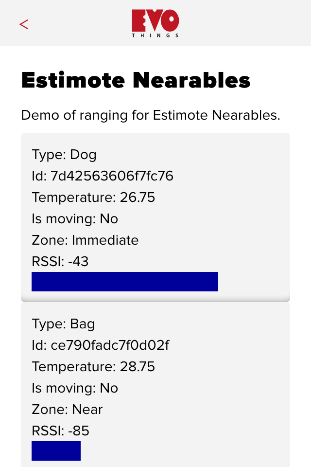
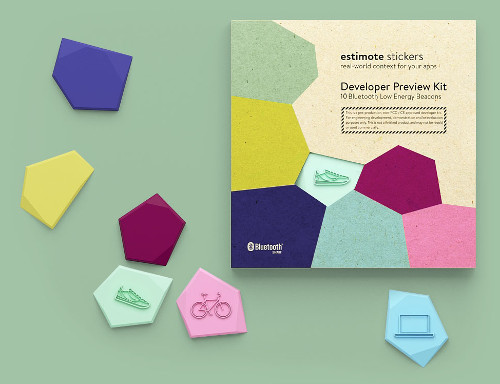

Estimote Nearables
Range Estimote Nearables. This app demonstrates how to scan for Estimote Stickers using ranging. Estimote Stickers are the first product to support the new Estimote Nearable API.
This example runs only on iOS. Run the example in Evothings Client on iOS. 
Source Code
You can browse the source code for this example at the Evothings GitHub repository
The file index.html is the main HTML file of the app.
In file app.js you will find the JavaScript code for the app.
What You Need
This example works with Estimote Stickers. Visit estimote.com for further details.
The example works only on iOS. Run the app in Evothings Client on iOS.
Optionally you can build a stand-alone native app using Cordova. You then need to include the Cordova plugin pl.makingwaves.estimotebeacons. For further details see the Cordova build guide.
An iOS device (iOS 7 or 8) is required.
How To Get Up And Running
Follow these steps to get started with this example:
- Have at least one Estimote Sticker nearby.
- Run the Evothings Workbench on your desktop/laptop computer.
- Run the Evothings client app on a mobile device and connect to the Workbench.
- Launch the example "Estimote Nearables" from the Workbench window by pressing "Run".
- If everything works, the app should automatically detect your Estimote Stickers.
To learn more, have a look at the GitHub page for the Estimote JavaScript plugin.